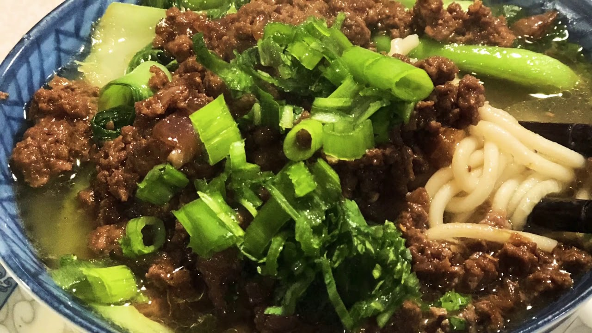

Thukpa

Description
Thukpa is a Tibetan noodle soup, which originated in the eastern part of Tibet. There are numerous varieties of Thukpa in Tibetan tradition.
Ingredients
- 2 cups rice noodles
- 1/2 cup carrots, thinly sliced
- 1 lb of minced beef
- 1 small onion (chopped)
- 2 stalk green onion
- 2 cups tomatoes
- 3 fresh chili peppers
- 2 Tablespoon of cooking oil
- 1 cup cabbage, thinly sliced
- 1 tablespoon garlic, minced
- 1 tablespoon ginger, minced
- 1 cup spinach
- 1 cup cilantro (to garnish)
- salt and pepper to taste
Steps
- Cook noodles in boiling salted water until slightly undercooked.
- Drain and rinse.
- In a sauce pan or wok, heat 2 tablespoons of cooking oil.
- Add onions, fry till light brown.
- Add turmeric, garlic, ginger, chilies, minced beef, and stir well for about a couple of minutes.
- To serve, put the noodle in a bowl and pour soup broth into it.
- Add salt and pepper to your taste. Also, hot chili goes well with Thukpa.